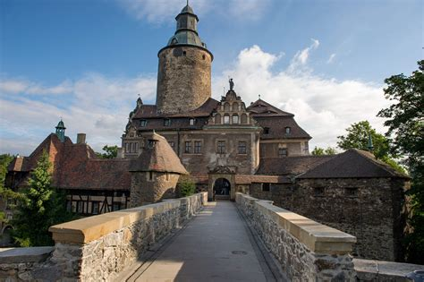

Zamek Czocha
W pobliżu zamku Czocha niedaleko Złotnik Lubańskich na Dolnym Śląsku aż do początku XVIII w. stała drewniana szubienica. Zachowały się świadectwa, kto na niej zginął, np. we wrześniu 1594r. kat połamał kołem niejakiego Michaela, skazanego za rozbój na drogach, morderstwa, kradzieże i fałszerstwa. Siedem miesięcy później na stryczku zawisł złodziej. W 1617r., na życzenie panów von Uechtritz, właścicieli zamku Czocha, wypożyczono specjalistę z Lubania, by połamał kołem kowala Jerzego Proxa, świętokradcę skazanego za okradzenie kościoła w Stankowicach. Kilkadziesiąt lat później doprowadzono Christopha Herbstena, chłopa z Giebułtowa, który w lutym 1651r. zabił nożem Jakoba Neumanna ze wsi Zacisze. Po kilkunastotygodniowym procesie morderca został doprowadzony na drogę dla bydła przebiegającą w pobliżu miejsca straceń i tam skrócony o głowę, a kilka godzin później pogrzebany.